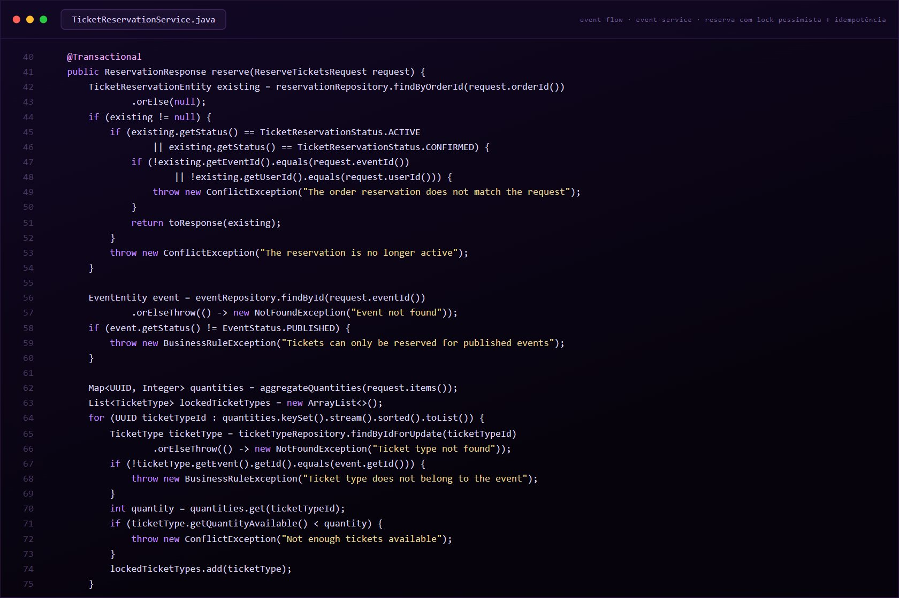
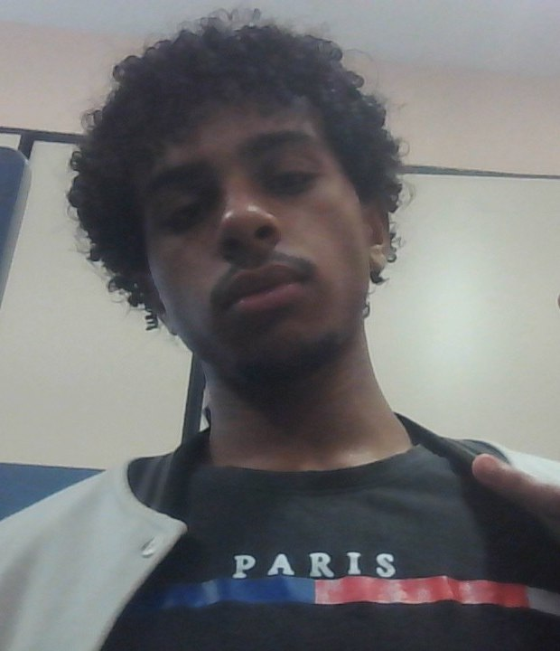
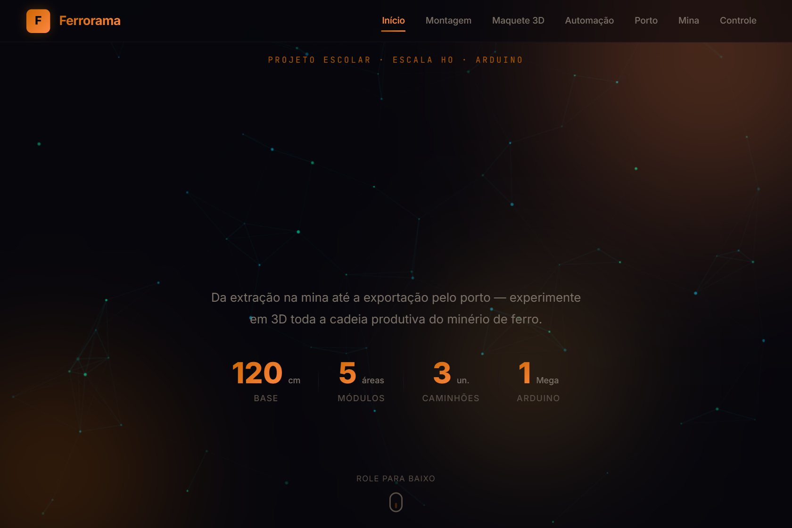
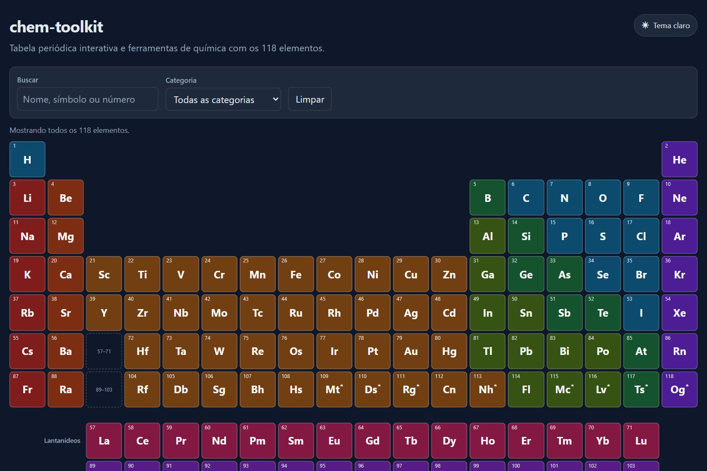
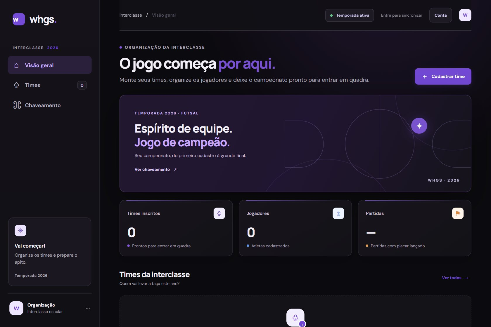

[01] backendeventos · pagamentos · recomendações
EventFlow
Ingressos, pagamentos sandbox e recomendações em uma arquitetura de microsserviços com outbox, RabbitMQ e idempotência.
// portfólio 2026 full-stack developer · Brasil
Sou Wenderson Henrique Gonçalves dos Santos. Construo a camada que faz a ideia funcionar: interfaces, APIs, dados e hardware conversando sem atrito. Do protótipo ao deploy.

Coisas que começaram como problema e terminaram como sistema. Algumas rodam na web, outras piscam em uma maquete.
código aberto no github
[01] backendeventos · pagamentos · recomendações
Ingressos, pagamentos sandbox e recomendações em uma arquitetura de microsserviços com outbox, RabbitMQ e idempotência.

[02] iotdashboard · websocket · hardware
Gêmeo digital de uma maquete industrial: dashboard via WebSocket, controle Bluetooth e firmware para ferrovia e caminhão.

[03] web app · onlinequímica · algoritmos · interface
Tabela periódica, massa molar e balanceamento de equações em TypeScript puro. Sem framework, com testes.

[04] produtofutsal · chaveamento · tempo real
Chaveamento, agenda sem conflitos, convites com papéis e placar ao vivo para campeonatos escolares de futsal.
Este portfólio foi feito para crescer. Novos cases entram aqui conforme saem do forno — inclusive uma ideia que ainda não existe.
Propor uma ideiaA sala de aula deu o vocabulário; os projetos deram o contexto. Minha formação é técnica, mas o jeito de aprender continua sendo construir.
Escola Estadual Monsenhor HortaConselheiro Lafaiete — Minas Gerais
Interfaces, design systems e acessibilidade. Aplicado em Interclasse e no painel da Maquete.
APIs, mensageria e consistência. Aplicado no EventFlow com quatro microsserviços e no back-end da Maquete.
Estruturas, modelagem e validação de dados. Aplicado no Chem Toolkit e nas regras do campeonato do Interclasse.
Software encontrando hardware. Aplicado na Maquete com Arduino, Bluetooth, gateway em Node.js e app em Kotlin.
Espaço para novos cursosCertificações e formações futuras entram aqui — em atualização contínua.
Sou Wenderson Henrique Gonçalves dos Santos, desenvolvedor full-stack de Conselheiro Lafaiete — MG. Gosto de entender o problema inteiro antes de escrever a primeira linha.
Minha base vem do Curso Técnico de Desenvolvimento de Sistemas da Escola Estadual Monsenhor Horta. Meu terreno vai de APIs e bancos de dados a dashboards e firmware. Aprendo construindo, documentando e quebrando coisas de propósito.
Não me interessa só a tela bonita ou só a API funcionando. O bom produto é aquele em que tudo se encaixa — inclusive o hardware no meio da sala.
Do pixel ao sinal elétrico. Trabalho para que front-end, back-end e hardware falem a mesma língua — e o resultado pareça simples para quem usa.
Telas que respondem, explicam e não fazem o usuário pensar duas vezes.
APIs, modelagem de dados e integrações que aguentam a vida real.
Quando o software precisa sair da tela e acender um LED do outro lado da sala.
Se você tem um produto para tirar do papel, um sistema para melhorar ou uma ideia estranha o suficiente para valer a pena, me manda uma mensagem. Respondo em até 48 horas.